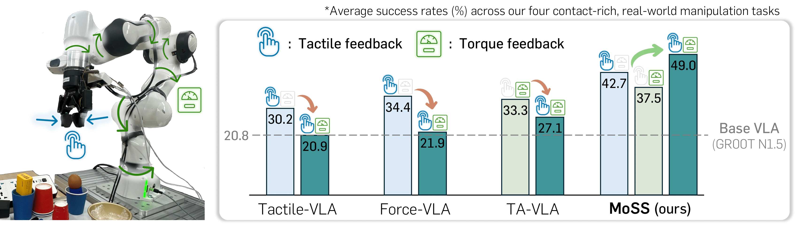
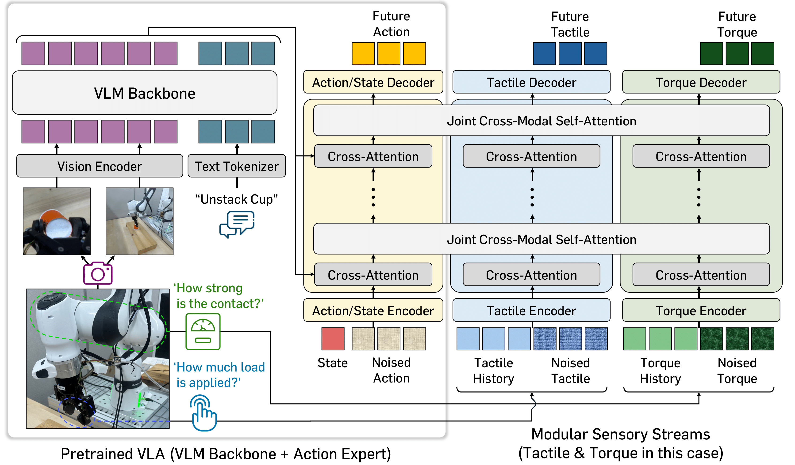
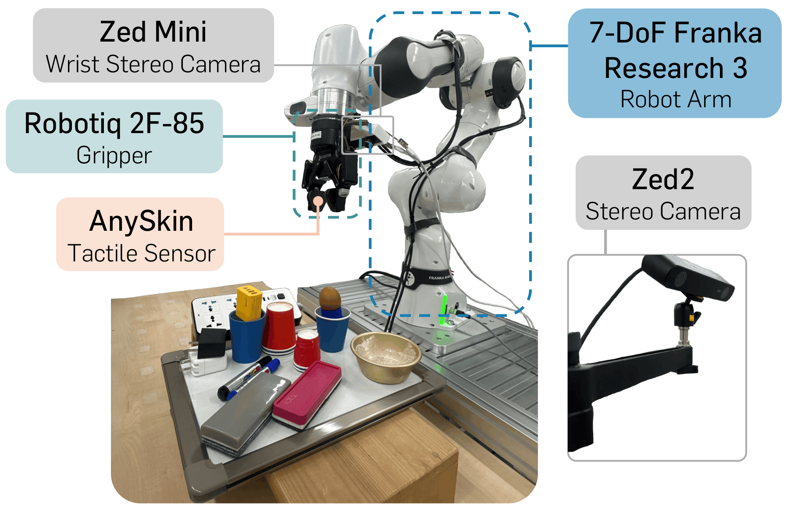
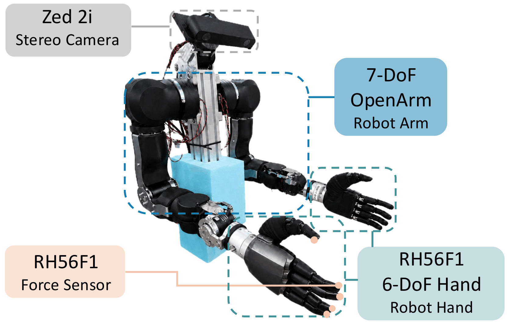

Humans understand and interact with the real world by relying on diverse physical feedback beyond visual perception. Motivated by this, recent approaches attempt to incorporate physical sensory signals into Vision-Language-Action models (VLAs). However, they typically focus on a single type of physical signal, failing to capture the heterogeneous and complementary nature of real-world interactions. In this paper, we propose MoSS, a Modular Sensory Stream framework that adapts VLAs to leverage multiple sensory signals for action prediction. Specifically, we introduce decoupled modality streams that integrate heterogeneous physical signals into the action stream via joint cross-modal self-attention. To enable stable incorporation of new modalities, we adopt a two-stage training scheme that freezes pretrained VLA parameters in the early stage. Furthermore, to better capture contact interaction dynamics, we incorporate an auxiliary task that predicts future physical signals. Through extensive real-world experiments, we demonstrate that MoSS successfully augments VLAs to leverage diverse physical signals (i.e., tactile, force and torque), integrating multiple signals to achieve synergistic performance gains.
MoSS is a modular adaptation framework for VLAs that enables scalable integration of multiple physical sensing modalities for contact-rich manipulation. The framework has two core components: (a) modular sensory streams, which process each physical signal (e.g., tactile, force, or torque) in parallel and inject them into the pretrained action expert via joint cross-modal self-attention, and (b) a two-stage training scheme, which first aligns the sensory streams with the frozen pretrained VLA and then jointly fine-tunes all components for coordinated control. In addition, an auxiliary future physical-signal prediction objective encourages the model to internalize contact dynamics, allowing heterogeneous sensory inputs to be combined in a synergistic and scalable manner.

We evaluate MoSS on two distinct hardware platforms to validate that the framework generalizes across embodiments. The first is a single-arm parallel-jaw setup used for contact-rich manipulation, and the second is a bimanual dexterous setup with per-arm wrist force sensing.

A single 7-DoF Franka Research 3 arm equipped with a Robotiq 2F-85 parallel-jaw gripper. Tactile and force/torque feedback are streamed into MoSS for contact-rich single-arm manipulation (Tasks A–D).

Two 7-DoF OpenArm manipulators, each equipped with a 6-DoF RH56F1 dexterous hand and a wrist-mounted RH56F1 force sensor. This bimanual dexterous setup is used for tasks that require coordinated two-hand manipulation and weight-aware reasoning (Tasks E and F).
We present real-robot demonstrations for each task on both hardware platforms. Use the dropdown menu within each task to select different variants.
Instruction "Pick up the top red cup from the stack and place it next to the blue cup."
Instruction "Pick up the egg and place it in the gold bowl."
Instruction "Use the (red/grey) eraser to clean the whiteboard."
Instruction "Pick up the (yellow/white/black) charger and plug it into the socket."
Instruction "Pick up the paper (napkin)."
Instruction "Place the bag on the right if heavy, and on the left if light."